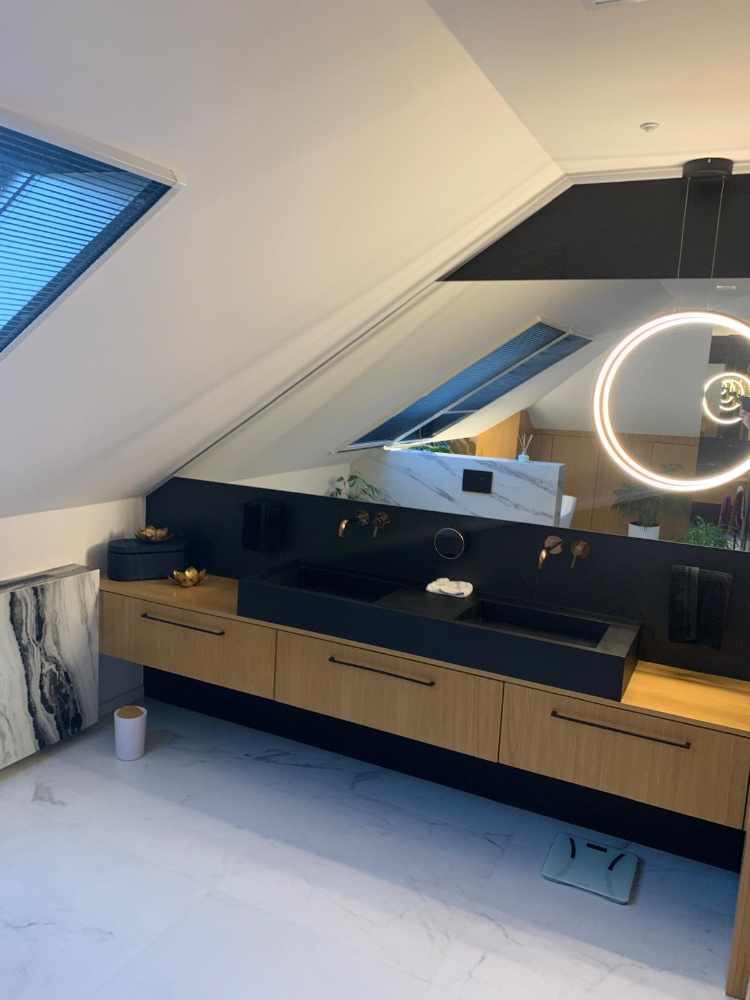
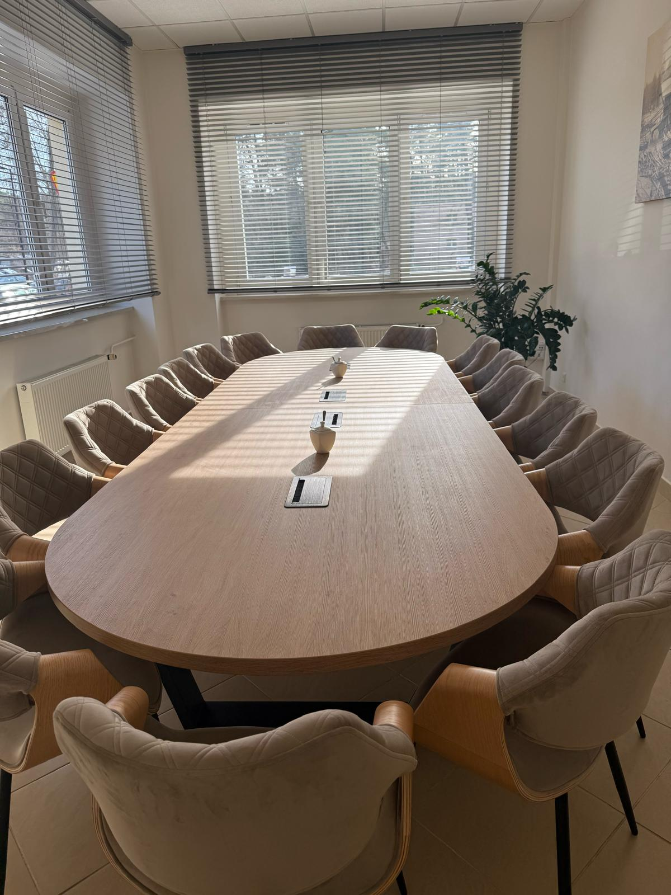
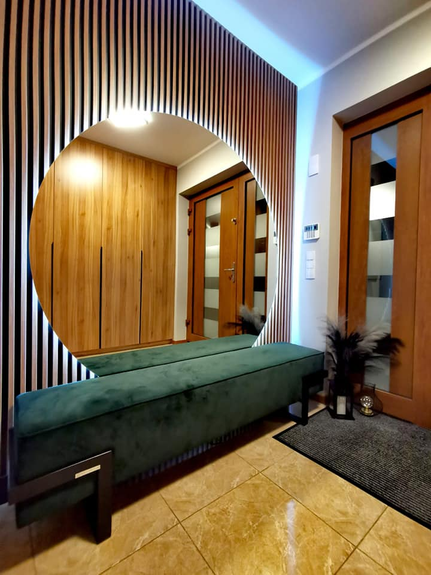
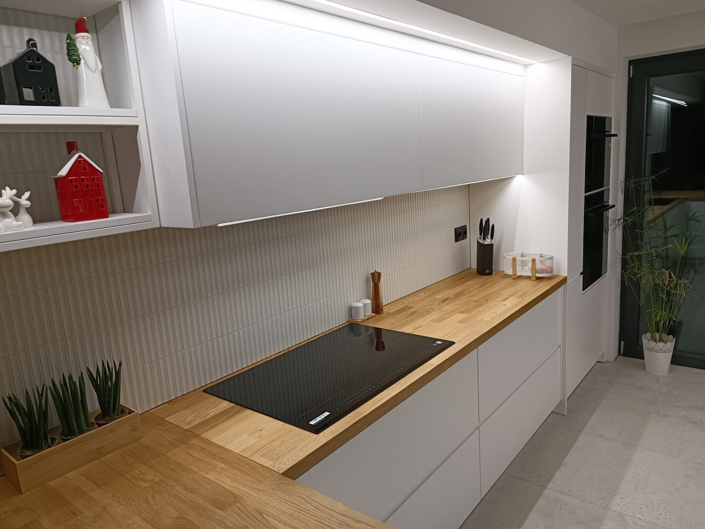

Kuchnie na wymiar
Kuchnia ma pasować do tego, jak gotujesz. Rozrysowujemy zabudowę pod Twoje sprzęty i nawyki: wysokość blatu pod Twój wzrost, szuflady tam, gdzie sięgasz najczęściej. Szafki prowadzimy do sufitu, żeby nic nie kurzyło się na wierzchu. Projekt oglądasz, zanim zamówimy materiał.

Szafy i garderoby
Garderoba z wnęki, w którą nie wchodzi nic gotowego - to robota, po którą ludzie dzwonią najczęściej. Wnękę mierzymy w kilku punktach, bo ściany rzadko stoją prosto, i docinamy zabudowę pod realne wymiary. Efekt wygląda, jakby był tam od budowy domu.

Zabudowy wnęk i skosów
Skos na poddaszu i wnęka pod schodami to miejsca, które zwykle się marnują. Robimy zabudowy dokładnie pod te nieproste kąty: szafki schodzące w skos, szuflady pod stopniami. Z martwego rogu robi się najpojemniejsza część domu.

Meble pokojowe i łazienkowe
Szafka RTV pod tę jedną ścianę albo biurko we wnękę - robimy meble do każdego pomieszczenia, w którym gotowe wymiary zawodzą. W łazience dajemy płyty i fronty odporne na parę i wodę, z okuciami, które nie rdzewieją. Taki zestaw przeżyje niejedno zalanie.

Meble do biur i lokali
Stoły konferencyjne, recepcje, zabudowy gabinetów i salonów usługowych. Robimy komplet pod jeden projekt, żeby lokal wyglądał spójnie, a nie jak zlepek mebli z różnych katalogów. Wymiar bierzemy na miejscu, po wykończeniu ścian.

Pomiar i projekt
Projekt pokazujemy tak, żebyś od razu widział swój pokój: rozmieszczenie i kolory frontów na Twoich wymiarach. Poprawki nanosimy, aż powiesz „to jest to” - na tym etapie nie kosztują nic. Do warsztatu idzie dopiero zatwierdzona wersja.